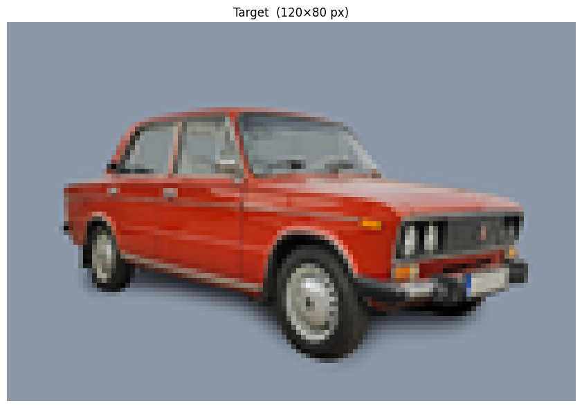
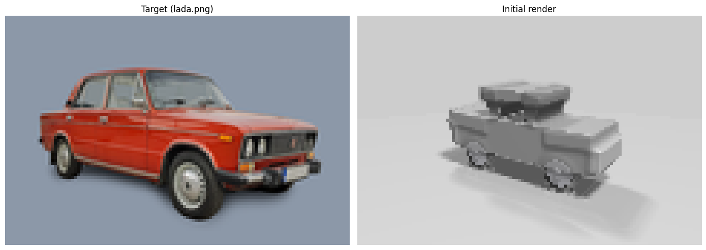
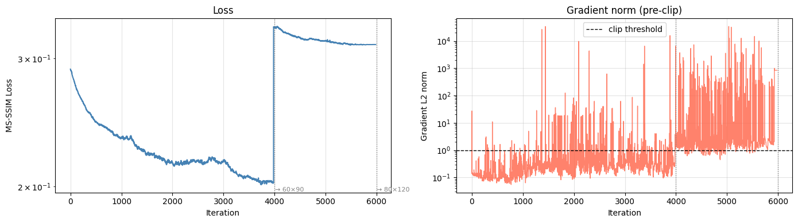

import time
import imageio
import jax
import jax.numpy as jnp
import matplotlib.pyplot as plt
import numpy as np
import optax
from PIL import Image
from jaxcad import (
compute_param_scales,
extract_parameters,
from_normalized,
functionalize_render,
to_normalized,
)
from jaxcad.geometry import Scalar, Vector
from jaxcad.render import Camera, Material, Scene
from jaxcad.sdf import Box, Cylinder, Plane, Rotate, RoundBox, Torus, Translate, UnionDifferentiable Rendering with jaxCAD’s Parameter System
jaxCAD’s sphere-tracing renderer is fully differentiable — gradients flow through the march loop, normal computation, and shading. This notebook solves an inverse-rendering problem: given a target photograph (lada.png), optimise a scene of SDF primitives so its rendering minimises pixel-space MSE against the photo.
The full pipeline uses jaxCAD’s parameter system end-to-end:
- Build a
Scenewith geometry, per-primitiveMaterials (colours as freeVectorparams), aCamera, and lighting. extract_parameters(scene)yields onefree_paramsdict covering geometry, materials, camera, and lights — no manual bookkeeping.functionalize_render(scene)compiles the scene to a pure(free_params, resolution) → imageJAX function, differentiable viajax.grad.- Adam optimises
free_paramsto minimise pixel-space MSE against the target.
Material colours are stored in [0, 1] linear space. The background colour (bg_color) is the exception: it lives in logit space and is sigmoid-mapped at render time so it stays unconstrained during optimisation.
# ── Target image ─────────────────────────────────────────────────────────────
RES = (80, 120) # (height, width)
SKY = (140, 152, 168)
img_rgba = Image.open("assets/lada.png").convert("RGBA")
bg = Image.new("RGB", img_rgba.size, SKY)
bg.paste(img_rgba.convert("RGB"), mask=img_rgba.split()[3])
target_pil = bg.resize((RES[1], RES[0]), Image.LANCZOS)
target = jnp.array(np.array(target_pil) / 255.0, dtype=jnp.float32)
fig, ax = plt.subplots(figsize=(9, 6))
ax.imshow(np.array(target))
ax.set_title(f"Target ({RES[1]}×{RES[0]} px)")
ax.axis("off")
plt.tight_layout()
plt.show()
# ── Free geometry parameters ──────────────────────────────────────────────────
# Lower body (chassis + doors)
body_pos = Vector([0.0, -0.10, 0.0], free=True, name="body_pos")
body_size = Vector([1.85, 0.42, 0.65], free=True, name="body_size", bounds=(0.01, None))
# Cabin — roof slab + front A-pillar + rear C-pillar, each with a free rotation angle
roof_pos = Vector([-0.15, 0.90, 0.0], free=True, name="roof_pos")
roof_size = Vector([0.82, 0.11, 0.58], free=True, name="roof_size", bounds=(0.01, None))
pillar_f_pos = Vector([-0.65, 0.67, 0.0], free=True, name="pillar_f_pos")
pillar_f_size = Vector([0.13, 0.25, 0.55], free=True, name="pillar_f_size", bounds=(0.01, None))
pillar_f_angle = Scalar(0.25, free=True, name="pillar_f_angle") # lean (rad), around Z
pillar_r_pos = Vector([0.42, 0.67, 0.0], free=True, name="pillar_r_pos")
pillar_r_size = Vector([0.13, 0.25, 0.55], free=True, name="pillar_r_size", bounds=(0.01, None))
pillar_r_angle = Scalar(-0.22, free=True, name="pillar_r_angle") # lean (rad), around Z
# Hood — free size, position, and slope angle (nose-down = negative)
hood_pos = Vector([-1.47, 0.18, 0.0], free=True, name="hood_pos")
hood_size = Vector([0.62, 0.12, 0.63], free=True, name="hood_size", bounds=(0.01, None))
hood_angle = Scalar(-0.08, free=True, name="hood_angle")
# Trunk lid — free size, position, and slope angle
trunk_pos = Vector([1.35, 0.14, 0.0], free=True, name="trunk_pos")
trunk_size = Vector([0.48, 0.09, 0.63], free=True, name="trunk_size", bounds=(0.01, None))
trunk_angle = Scalar(0.06, free=True, name="trunk_angle")
# Bumpers
bumper_f_pos = Vector([-1.96, -0.20, 0.0], free=True, name="bumper_f_pos")
bumper_r_pos = Vector([1.96, -0.20, 0.0], free=True, name="bumper_r_pos")
bumper_size = Vector([0.04, 0.18, 0.58], free=True, name="bumper_size", bounds=(0.01, None))
bumper_radius = Scalar(0.06, free=True, name="bumper_radius", bounds=(0.001, None))
# Wheel positions (near-side, disc face toward +Z camera)
wf_pos = Vector([-1.15, -0.65, 0.52], free=True, name="wf_pos")
wr_pos = Vector([1.15, -0.65, 0.52], free=True, name="wr_pos")
# Tire — Torus in XY plane (Z = wheel symmetry axis)
r_tire_major = Scalar(0.34, free=True, name="r_tire_major", bounds=(0.05, None))
r_tire_minor = Scalar(0.08, free=True, name="r_tire_minor", bounds=(0.01, None))
# Rim disc (aluminium face)
r_rim = Scalar(0.28, free=True, name="r_rim", bounds=(0.02, None))
wh_rim = Scalar(0.10, free=True, name="wh_rim", bounds=(0.01, None))
# Central hub boss
r_hub = Scalar(0.08, free=True, name="r_hub", bounds=(0.01, None))
wh_hub = Scalar(0.16, free=True, name="wh_hub", bounds=(0.01, None))
# Materials
body_mat = Material("body_mat", color=[0.50, 0.50, 0.50], roughness=0.40, metallic=0.12, free=True)
roof_mat = Material("roof_mat", color=[0.50, 0.50, 0.50], roughness=0.35, metallic=0.08, free=True)
pillar_mat = Material(
"pillar_mat", color=[0.10, 0.10, 0.10], roughness=0.60, metallic=0.05, free=True
)
hood_mat = Material("hood_mat", color=[0.50, 0.50, 0.50], roughness=0.38, metallic=0.12, free=True)
tire_mat = Material("tire_mat", color=[0.08, 0.08, 0.08], roughness=0.88, metallic=0.00, free=True)
rim_mat = Material("rim_mat", color=[0.75, 0.75, 0.80], roughness=0.18, metallic=0.92, free=True)
bump_mat = Material("bump_mat", color=[0.72, 0.72, 0.72], roughness=0.50, metallic=0.25, free=True)
ground_mat = Material(
"ground_mat", color=[0.40, 0.40, 0.40], roughness=0.95, metallic=0.00, free=True
)
# ── Ground plane ──────────────────────────────────────────────────────────────
GROUND_Y = -1.10
ground = Plane(height=Scalar(GROUND_Y, free=False), material=ground_mat)
# ── Wheel assembly: rubber torus + aluminium rim disc + hub boss ───────────────
def make_wheel(pos):
tire = Translate(
Torus(major_radius=r_tire_major, minor_radius=r_tire_minor, material=tire_mat), pos
)
rim = Translate(Cylinder(radius=r_rim, height=wh_rim, material=rim_mat), pos)
hub = Translate(Cylinder(radius=r_hub, height=wh_hub, material=rim_mat), pos)
return Union((tire, rim, hub), smoothness=0.0)
car = Union(
(
# ── Body ─────────────────────────────────────────────────────────────
Translate(Box(size=body_size, material=body_mat), body_pos),
# ── Cabin: roof + A-pillar (front) + C-pillar (rear) ─────────────────
Translate(Box(size=roof_size, material=roof_mat), roof_pos),
Translate(
Rotate(
RoundBox(size=pillar_f_size, radius=0.03, material=pillar_mat), "z", pillar_f_angle
),
pillar_f_pos,
),
Translate(
Rotate(
RoundBox(size=pillar_r_size, radius=0.03, material=pillar_mat), "z", pillar_r_angle
),
pillar_r_pos,
),
# ── Hood (sloped) ─────────────────────────────────────────────────────
Translate(Rotate(Box(size=hood_size, material=hood_mat), "z", hood_angle), hood_pos),
# ── Trunk lid (sloped) ────────────────────────────────────────────────
Translate(Rotate(Box(size=trunk_size, material=hood_mat), "z", trunk_angle), trunk_pos),
# ── Bumpers ───────────────────────────────────────────────────────────
Translate(
RoundBox(size=bumper_size, radius=bumper_radius, material=bump_mat), bumper_f_pos
),
Translate(
RoundBox(size=bumper_size, radius=bumper_radius, material=bump_mat), bumper_r_pos
),
# ── Near-side wheels (tire + rim + hub) ───────────────────────────────
make_wheel(wf_pos),
make_wheel(wr_pos),
),
smoothness=0.05,
)
geometry = Union((car, ground), smoothness=0.0)
# ── Camera and scene ──────────────────────────────────────────────────────────
camera = Camera(
camera_pos=Vector([4.0, 2.0, 6.0], free=True, name="camera_pos"),
look_at=Vector([0.0, 0.0, 0.0], free=False, name="look_at"),
fov=Scalar(0.55, free=False, name="fov"),
)
scene = Scene(
geometry,
camera,
bg_color=Vector([0.5, 0.5, 0.5], free=True, name="bg_color"),
light_dirs=[
Vector([0.45, 0.85, 0.25], free=True, name="light_dir_0"),
Vector([-0.3, 0.5, -0.2], free=True, name="light_dir_1"),
],
light_colors=[
Vector([0.90, 0.90, 0.90], free=True, name="light_color_0", bounds=(0.0, None)),
Vector([0.35, 0.35, 0.35], free=True, name="light_color_1", bounds=(0.0, None)),
],
)
# ── Extract all free parameters ───────────────────────────────────────────────
free_params, fixed_params, metadata = extract_parameters(scene)
print("free_params keys:", sorted(free_params.keys()))
print(
f"\n{len(free_params)} free params, "
f"{sum(v.size for v in free_params.values())} scalar values"
)
bounded = {k: p.bounds for k, p in metadata.items() if p.bounds is not None}
print(f"\nBounded params ({len(bounded)}): {bounded}")free_params keys: ['bg_color', 'body_mat_color', 'body_mat_ior', 'body_mat_metallic', 'body_mat_opacity', 'body_mat_reflectivity', 'body_mat_roughness', 'body_pos', 'body_size', 'bump_mat_color', 'bump_mat_ior', 'bump_mat_metallic', 'bump_mat_opacity', 'bump_mat_reflectivity', 'bump_mat_roughness', 'bumper_f_pos', 'bumper_r_pos', 'bumper_radius', 'bumper_size', 'camera_pos', 'ground_mat_color', 'ground_mat_ior', 'ground_mat_metallic', 'ground_mat_opacity', 'ground_mat_reflectivity', 'ground_mat_roughness', 'hood_angle', 'hood_mat_color', 'hood_mat_ior', 'hood_mat_metallic', 'hood_mat_opacity', 'hood_mat_reflectivity', 'hood_mat_roughness', 'hood_pos', 'hood_size', 'light_color_0', 'light_color_1', 'light_dir_0', 'light_dir_1', 'pillar_f_angle', 'pillar_f_pos', 'pillar_f_size', 'pillar_mat_color', 'pillar_mat_ior', 'pillar_mat_metallic', 'pillar_mat_opacity', 'pillar_mat_reflectivity', 'pillar_mat_roughness', 'pillar_r_angle', 'pillar_r_pos', 'pillar_r_size', 'r_hub', 'r_rim', 'r_tire_major', 'r_tire_minor', 'rim_mat_color', 'rim_mat_ior', 'rim_mat_metallic', 'rim_mat_opacity', 'rim_mat_reflectivity', 'rim_mat_roughness', 'roof_mat_color', 'roof_mat_ior', 'roof_mat_metallic', 'roof_mat_opacity', 'roof_mat_reflectivity', 'roof_mat_roughness', 'roof_pos', 'roof_size', 'tire_mat_color', 'tire_mat_ior', 'tire_mat_metallic', 'tire_mat_opacity', 'tire_mat_reflectivity', 'tire_mat_roughness', 'trunk_angle', 'trunk_pos', 'trunk_size', 'wf_pos', 'wh_hub', 'wh_rim', 'wr_pos']
82 free params, 144 scalar values
Bounded params (64): {'light_color_0': (0.0, None), 'light_color_1': (0.0, None), 'body_size': (0.01, None), 'body_mat_color': (0.0, 1.0), 'body_mat_roughness': (0.0, 1.0), 'body_mat_metallic': (0.0, 1.0), 'body_mat_opacity': (0.0, 1.0), 'body_mat_ior': (1.0, 3.0), 'body_mat_reflectivity': (0.0, 1.0), 'roof_size': (0.01, None), 'roof_mat_color': (0.0, 1.0), 'roof_mat_roughness': (0.0, 1.0), 'roof_mat_metallic': (0.0, 1.0), 'roof_mat_opacity': (0.0, 1.0), 'roof_mat_ior': (1.0, 3.0), 'roof_mat_reflectivity': (0.0, 1.0), 'pillar_f_size': (0.01, None), 'pillar_mat_color': (0.0, 1.0), 'pillar_mat_roughness': (0.0, 1.0), 'pillar_mat_metallic': (0.0, 1.0), 'pillar_mat_opacity': (0.0, 1.0), 'pillar_mat_ior': (1.0, 3.0), 'pillar_mat_reflectivity': (0.0, 1.0), 'pillar_r_size': (0.01, None), 'hood_size': (0.01, None), 'hood_mat_color': (0.0, 1.0), 'hood_mat_roughness': (0.0, 1.0), 'hood_mat_metallic': (0.0, 1.0), 'hood_mat_opacity': (0.0, 1.0), 'hood_mat_ior': (1.0, 3.0), 'hood_mat_reflectivity': (0.0, 1.0), 'trunk_size': (0.01, None), 'bumper_size': (0.01, None), 'bumper_radius': (0.001, None), 'bump_mat_color': (0.0, 1.0), 'bump_mat_roughness': (0.0, 1.0), 'bump_mat_metallic': (0.0, 1.0), 'bump_mat_opacity': (0.0, 1.0), 'bump_mat_ior': (1.0, 3.0), 'bump_mat_reflectivity': (0.0, 1.0), 'r_tire_major': (0.05, None), 'r_tire_minor': (0.01, None), 'tire_mat_color': (0.0, 1.0), 'tire_mat_roughness': (0.0, 1.0), 'tire_mat_metallic': (0.0, 1.0), 'tire_mat_opacity': (0.0, 1.0), 'tire_mat_ior': (1.0, 3.0), 'tire_mat_reflectivity': (0.0, 1.0), 'r_rim': (0.02, None), 'wh_rim': (0.01, None), 'rim_mat_color': (0.0, 1.0), 'rim_mat_roughness': (0.0, 1.0), 'rim_mat_metallic': (0.0, 1.0), 'rim_mat_opacity': (0.0, 1.0), 'rim_mat_ior': (1.0, 3.0), 'rim_mat_reflectivity': (0.0, 1.0), 'r_hub': (0.01, None), 'wh_hub': (0.01, None), 'ground_mat_color': (0.0, 1.0), 'ground_mat_roughness': (0.0, 1.0), 'ground_mat_metallic': (0.0, 1.0), 'ground_mat_opacity': (0.0, 1.0), 'ground_mat_ior': (1.0, 3.0), 'ground_mat_reflectivity': (0.0, 1.0)}# ── Compile the scene to a differentiable render function ─────────────────────
#
# functionalize_render walks the geometry + material tree, builds pure JAX
# closures for the SDF and material_fn, and wires them into the sphere-tracing
# renderer. The result is a plain function that jax.grad can differentiate
# through entirely.
diff_render = functionalize_render(
scene,
max_steps=32,
shadow_steps=12,
shadow_hardness=6.0,
gamma=2.2,
fd_normals=False,
)
print("Rendering initial scene (first run triggers XLA compilation)...")
img0 = diff_render(free_params, resolution=RES)
print(f"Output shape: {img0.shape}")
fig, axes = plt.subplots(1, 2, figsize=(14, 5))
axes[0].imshow(np.array(target))
axes[0].set_title("Target (lada.png)")
axes[0].axis("off")
axes[1].imshow(np.array(img0))
axes[1].set_title("Initial render")
axes[1].axis("off")
plt.tight_layout()
plt.show()Rendering initial scene (first run triggers XLA compilation)...
Output shape: (80, 120, 3)
Optimisation
We minimise MS-SSIM loss with AdamW and two improvements over a plain fixed-LR loop:
- Cosine LR decay — learning rate anneals smoothly from
3e-4to0over all steps, avoiding late-stage instability. - Coarse-to-fine rendering — three phases at increasing resolution (40×60 → 60×90 → 80×120). Early low-res steps are cheap and escape coarse geometry minima; later high-res steps refine details. Adam momentum carries over across phases so convergence isn’t reset.
# --- SSIM loss utilities ---
def _ssim_channel(x, y, win_size=3, C1=1e-4, C2=9e-4):
"""SSIM between two (H, W) arrays using a uniform window."""
pad = win_size // 2
k = jnp.ones((win_size, win_size)) / win_size**2
def filt2d(img):
n = img[None, None] # (1, 1, H, W)
f = k[None, None] # (1, 1, win, win)
return jax.lax.conv_general_dilated(
n,
f,
(1, 1),
padding=((pad, pad), (pad, pad)),
dimension_numbers=("NCHW", "OIHW", "NCHW"),
)[0, 0]
mu_x = filt2d(x)
mu_y = filt2d(y)
# clamp to 0 — float32 subtraction can produce tiny negatives in flat regions
s_x2 = jnp.maximum(filt2d(x * x) - mu_x**2, 0.0)
s_y2 = jnp.maximum(filt2d(y * y) - mu_y**2, 0.0)
s_xy = filt2d(x * y) - mu_x * mu_y
num = (2 * mu_x * mu_y + C1) * (2 * s_xy + C2)
den = (mu_x**2 + mu_y**2 + C1) * (s_x2 + s_y2 + C2)
# average numerator/denominator separately to avoid NaN from pointwise near-zero den
return jnp.sum(num) / jnp.maximum(jnp.sum(den), 1e-8)
def ms_ssim_loss(rendered, target, scales=(1, 2, 3, 4)):
"""Multi-scale SSIM loss (average of 1-SSIM across scales and channels)."""
# vmap over the channel axis — one traced graph instead of three
ssim_per_channel = jax.vmap(_ssim_channel, in_axes=(2, 2))
total = 0.0
for s in scales:
if s > 1:
H, W, _ = rendered.shape
r = jax.image.resize(rendered, (H // s, W // s, 3), method="linear")
t = jax.image.resize(target, (H // s, W // s, 3), method="linear")
else:
r, t = rendered, target
total += 1.0 - jnp.mean(ssim_per_channel(r, t))
return total / len(scales)# ── Parameter space setup ─────────────────────────────────────────────────────
# Two composable layers between raw params and the optimizer:
#
# free_params ──► to_unconstrained ──► normalize ──► Lion optimizes here
# │
# free_params ◄── to_constrained ◄── unnormalize ◄───────┘
#
# to_normalized / from_normalized are imported from jaxcad.parametrization.
# compute_param_scales assigns scale=1.0 to fully-bounded params (sigmoid maps
# them to O(1–4) already) and scale=SCENE_SCALE to lower-bounded/unbounded
# params so the optimizer always works in an approximately O(1) space.
SCENE_SCALE = 2.0 # characteristic scene length — tune if needed
scales = compute_param_scales(metadata, scene_scale=SCENE_SCALE)
# Sanity-check: print per-param min/max in normalized space
normalized_init = to_normalized(free_params, metadata, scales)
print(f"{'param':<30} {'min':>8} {'max':>8}")
for k, v in sorted(normalized_init.items()):
print(f" {k:<28} {float(jnp.min(v)):>8.3f} {float(jnp.max(v)):>8.3f}")
# Round-trip sanity check
rt = from_normalized(normalized_init, metadata, scales)
max_err = max(float(jnp.max(jnp.abs(rt[k] - free_params[k]))) for k in free_params)
print(f"\nRound-trip max error: {max_err:.2e} (should be < 1e-5)")param min max
bg_color 0.250 0.250
body_mat_color 0.000 0.000
body_mat_ior -13.816 -13.816
body_mat_metallic -1.992 -1.992
body_mat_opacity 13.802 13.802
body_mat_reflectivity -13.816 -13.816
body_mat_roughness -0.405 -0.405
body_pos -0.050 0.000
body_size -0.340 0.834
bump_mat_color 0.944 0.944
bump_mat_ior -13.816 -13.816
bump_mat_metallic -1.099 -1.099
bump_mat_opacity 13.802 13.802
bump_mat_reflectivity -13.816 -13.816
bump_mat_roughness 0.000 0.000
bumper_f_pos -0.980 0.000
bumper_r_pos -0.100 0.980
bumper_radius -1.400 -1.400
bumper_size -1.746 -0.132
camera_pos 1.000 3.000
ground_mat_color -0.405 -0.405
ground_mat_ior -13.816 -13.816
ground_mat_metallic -13.816 -13.816
ground_mat_opacity 13.802 13.802
ground_mat_reflectivity -13.816 -13.816
ground_mat_roughness 2.944 2.944
hood_angle -0.040 -0.040
hood_mat_color 0.000 0.000
hood_mat_ior -13.816 -13.816
hood_mat_metallic -1.992 -1.992
hood_mat_opacity 13.802 13.802
hood_mat_reflectivity -13.816 -13.816
hood_mat_roughness -0.490 -0.490
hood_pos -0.735 0.090
hood_size -1.076 -0.076
light_color_0 0.189 0.189
light_color_1 -0.435 -0.435
light_dir_0 0.125 0.425
light_dir_1 -0.150 0.250
pillar_f_angle 0.125 0.125
pillar_f_pos -0.325 0.335
pillar_f_size -1.030 -0.167
pillar_mat_color -2.197 -2.197
pillar_mat_ior -13.816 -13.816
pillar_mat_metallic -2.944 -2.944
pillar_mat_opacity 13.802 13.802
pillar_mat_reflectivity -13.816 -13.816
pillar_mat_roughness 0.405 0.405
pillar_r_angle -0.110 -0.110
pillar_r_pos 0.000 0.335
pillar_r_size -1.030 -0.167
r_hub -1.312 -1.312
r_rim -0.607 -0.607
r_tire_major -0.545 -0.545
r_tire_minor -1.312 -1.312
rim_mat_color 1.099 1.386
rim_mat_ior -13.816 -13.816
rim_mat_metallic 2.442 2.442
rim_mat_opacity 13.802 13.802
rim_mat_reflectivity -13.816 -13.816
rim_mat_roughness -1.516 -1.516
roof_mat_color 0.000 0.000
roof_mat_ior -13.816 -13.816
roof_mat_metallic -2.442 -2.442
roof_mat_opacity 13.802 13.802
roof_mat_reflectivity -13.816 -13.816
roof_mat_roughness -0.619 -0.619
roof_pos -0.075 0.450
roof_size -1.126 0.111
tire_mat_color -2.442 -2.442
tire_mat_ior -13.816 -13.816
tire_mat_metallic -13.816 -13.816
tire_mat_opacity 13.802 13.802
tire_mat_reflectivity -13.816 -13.816
tire_mat_roughness 1.992 1.992
trunk_angle 0.030 0.030
trunk_pos 0.000 0.675
trunk_size -1.243 -0.076
wf_pos -0.575 0.260
wh_hub -0.911 -0.911
wh_rim -1.181 -1.181
wr_pos -0.325 0.575
Round-trip max error: 2.03e-06 (should be < 1e-5)# ── Coarse-to-fine optimisation with cosine LR decay ─────────────────────────
phases = [
{"resolution": (40, 60), "steps": 4000, "max_steps": 16, "shadow_steps": 6},
{"resolution": (120, 180), "steps": 2000, "max_steps": 48, "shadow_steps": 16},
]
N_STEPS = sum(p["steps"] for p in phases)
# Lion + normalized params — no bounds projection needed
schedule = optax.cosine_decay_schedule(init_value=3e-4, decay_steps=N_STEPS)
optimizer = optax.lion(schedule, weight_decay=1e-3)
# Work in normalized space; bounds enforced via sigmoid/softplus, scale via `scales`
params = to_normalized(free_params, metadata, scales)
opt_state = optimizer.init(params)
losses = []
grad_norms = []
snapshots = {}
step_global = 0
print(f"{'Phase':<8} {'Res':>10} {'Steps':>6} {'march':>6} {'shadow':>7}")
for p in phases:
r = p["resolution"]
print(
f" {phases.index(p)+1}/{len(phases)} {r[1]}×{r[0]:>3} {p['steps']:>5} {p['max_steps']:>4} {p['shadow_steps']:>5}"
)
print(
f"\nTotal steps: {N_STEPS} LR: cosine 3e-4 → 0 (Lion) weight_decay=1e-3 bounds: sigmoid/softplus+scale"
)
def make_step_fn(render_fn, res, tgt, optimizer):
"""JIT-compile the full step: forward + backward + optimizer update + grad stats."""
def loss_fn(normalized_p):
p = from_normalized(normalized_p, metadata, scales)
rendered = render_fn(p, resolution=res)
return ms_ssim_loss(rendered, tgt)
val_and_grad = jax.value_and_grad(loss_fn)
@jax.jit
def step(params, opt_state):
val, grads = val_and_grad(params)
leaves = jax.tree.leaves(grads)
grad_norm = jnp.sqrt(sum(jnp.sum(g**2) for g in leaves))
grad_max = jnp.max(jnp.stack([jnp.max(jnp.abs(g)) for g in leaves]))
grad_min = jnp.min(jnp.stack([jnp.min(jnp.abs(g)) for g in leaves]))
has_nan = jnp.isnan(val) | jnp.any(jnp.stack([jnp.any(jnp.isnan(g)) for g in leaves]))
updates, new_opt_state = optimizer.update(grads, opt_state, params)
new_params = optax.apply_updates(params, updates)
return new_params, new_opt_state, val, grads, grad_norm, grad_max, grad_min, has_nan
return step
for phase_idx, phase in enumerate(phases):
res = phase["resolution"]
n_steps = phase["steps"]
render_phase = functionalize_render(
scene,
max_steps=phase["max_steps"],
shadow_steps=phase["shadow_steps"],
shadow_hardness=6.0,
gamma=1.0,
fd_normals=False,
)
target_phase = jnp.array(
np.array(target_pil.resize((res[1], res[0]), Image.LANCZOS)) / 255.0,
dtype=jnp.float32,
)
step_fn = make_step_fn(render_phase, res, target_phase, optimizer)
print(
f"\n── Phase {phase_idx + 1}/{len(phases)} {res[1]}×{res[0]} "
f"march={phase['max_steps']} shadow={phase['shadow_steps']} {n_steps} steps ──"
)
print(" (first step of each phase triggers XLA recompilation)")
val_buf = []
gn_buf = []
ema_ms = None
t_print = time.perf_counter()
for step in range(n_steps):
params, opt_state, val, grads, grad_norm, grad_max, grad_min, has_nan = step_fn(
params, opt_state
)
val_buf.append(val)
gn_buf.append(grad_norm)
do_print = (step_global % 20 == 0) or (step_global == N_STEPS - 1)
if do_print:
val_f = float(val)
gn_f = float(grad_norm)
gmax_f = float(grad_max)
gmin_f = float(grad_min)
nan_f = bool(has_nan)
losses.extend(float(v) for v in val_buf)
grad_norms.extend(float(g) for g in gn_buf)
val_buf.clear()
gn_buf.clear()
if nan_f:
nan_keys = [k for k, v in grads.items() if bool(jnp.any(jnp.isnan(v)))]
print(f"\n !! NaN at step {step_global} loss={val_f} |grad|={gn_f:.3f}")
print(f" NaN gradient keys: {nan_keys}")
break
window = step_global % 20 or 20
window_ms = (time.perf_counter() - t_print) * 1000
ms_per_step = window_ms / max(window, 1)
if step > 0:
ema_ms = ms_per_step if ema_ms is None else 0.5 * ema_ms + 0.5 * ms_per_step
t_print = time.perf_counter()
ms_str = f"{ema_ms:6.1f}" if ema_ms is not None else " jit"
snapshots[step_global] = np.array(
diff_render(from_normalized(params, metadata, scales), resolution=RES)
)
print(
f" step {step_global:4d} loss={val_f:.5f} "
f"|grad|={gn_f:.3f} max={gmax_f:.3e} min={gmin_f:.3e} "
f"ms/step={ms_str}"
)
step_global += 1
else:
continue
breakprint(params){'bg_color': Array([nan, nan, nan], dtype=float32), 'body_mat_color': Array([nan, nan, nan], dtype=float32), 'body_mat_ior': Array(nan, dtype=float32), 'body_mat_metallic': Array(nan, dtype=float32), 'body_mat_opacity': Array(nan, dtype=float32), 'body_mat_reflectivity': Array(nan, dtype=float32), 'body_mat_roughness': Array(nan, dtype=float32), 'body_pos': Array([nan, nan, nan], dtype=float32), 'body_size': Array([nan, nan, nan], dtype=float32), 'bump_mat_color': Array([nan, nan, nan], dtype=float32), 'bump_mat_ior': Array(nan, dtype=float32), 'bump_mat_metallic': Array(nan, dtype=float32), 'bump_mat_opacity': Array(nan, dtype=float32), 'bump_mat_reflectivity': Array(nan, dtype=float32), 'bump_mat_roughness': Array(nan, dtype=float32), 'bumper_f_pos': Array([nan, nan, nan], dtype=float32), 'bumper_r_pos': Array([nan, nan, nan], dtype=float32), 'bumper_radius': Array(nan, dtype=float32), 'bumper_size': Array([nan, nan, nan], dtype=float32), 'camera_pos': Array([nan, nan, nan], dtype=float32), 'ground_mat_color': Array([nan, nan, nan], dtype=float32), 'ground_mat_ior': Array(nan, dtype=float32), 'ground_mat_metallic': Array(nan, dtype=float32), 'ground_mat_opacity': Array(nan, dtype=float32), 'ground_mat_reflectivity': Array(nan, dtype=float32), 'ground_mat_roughness': Array(nan, dtype=float32), 'hood_angle': Array(nan, dtype=float32), 'hood_mat_color': Array([nan, nan, nan], dtype=float32), 'hood_mat_ior': Array(nan, dtype=float32), 'hood_mat_metallic': Array(nan, dtype=float32), 'hood_mat_opacity': Array(nan, dtype=float32), 'hood_mat_reflectivity': Array(nan, dtype=float32), 'hood_mat_roughness': Array(nan, dtype=float32), 'hood_pos': Array([nan, nan, nan], dtype=float32), 'hood_size': Array([nan, nan, nan], dtype=float32), 'light_color_0': Array([nan, nan, nan], dtype=float32), 'light_color_1': Array([nan, nan, nan], dtype=float32), 'light_dir_0': Array([nan, nan, nan], dtype=float32), 'light_dir_1': Array([nan, nan, nan], dtype=float32), 'pillar_f_angle': Array(nan, dtype=float32), 'pillar_f_pos': Array([nan, nan, nan], dtype=float32), 'pillar_f_size': Array([nan, nan, nan], dtype=float32), 'pillar_mat_color': Array([nan, nan, nan], dtype=float32), 'pillar_mat_ior': Array(nan, dtype=float32), 'pillar_mat_metallic': Array(nan, dtype=float32), 'pillar_mat_opacity': Array(nan, dtype=float32), 'pillar_mat_reflectivity': Array(nan, dtype=float32), 'pillar_mat_roughness': Array(nan, dtype=float32), 'pillar_r_angle': Array(nan, dtype=float32), 'pillar_r_pos': Array([nan, nan, nan], dtype=float32), 'pillar_r_size': Array([nan, nan, nan], dtype=float32), 'r_hub': Array(nan, dtype=float32), 'r_rim': Array(nan, dtype=float32), 'r_tire_major': Array(nan, dtype=float32), 'r_tire_minor': Array(nan, dtype=float32), 'rim_mat_color': Array([nan, nan, nan], dtype=float32), 'rim_mat_ior': Array(nan, dtype=float32), 'rim_mat_metallic': Array(nan, dtype=float32), 'rim_mat_opacity': Array(nan, dtype=float32), 'rim_mat_reflectivity': Array(nan, dtype=float32), 'rim_mat_roughness': Array(nan, dtype=float32), 'roof_mat_color': Array([nan, nan, nan], dtype=float32), 'roof_mat_ior': Array(nan, dtype=float32), 'roof_mat_metallic': Array(nan, dtype=float32), 'roof_mat_opacity': Array(nan, dtype=float32), 'roof_mat_reflectivity': Array(nan, dtype=float32), 'roof_mat_roughness': Array(nan, dtype=float32), 'roof_pos': Array([nan, nan, nan], dtype=float32), 'roof_size': Array([nan, nan, nan], dtype=float32), 'tire_mat_color': Array([nan, nan, nan], dtype=float32), 'tire_mat_ior': Array(nan, dtype=float32), 'tire_mat_metallic': Array(nan, dtype=float32), 'tire_mat_opacity': Array(nan, dtype=float32), 'tire_mat_reflectivity': Array(nan, dtype=float32), 'tire_mat_roughness': Array(nan, dtype=float32), 'trunk_angle': Array(nan, dtype=float32), 'trunk_pos': Array([nan, nan, nan], dtype=float32), 'trunk_size': Array([nan, nan, nan], dtype=float32), 'wf_pos': Array([nan, nan, nan], dtype=float32), 'wh_hub': Array(nan, dtype=float32), 'wh_rim': Array(nan, dtype=float32), 'wr_pos': Array([nan, nan, nan], dtype=float32)}fig, (ax1, ax2) = plt.subplots(1, 2, figsize=(14, 4))
ax1.plot(losses, color="steelblue", linewidth=1.5)
ax1.set_xlabel("Iteration")
ax1.set_ylabel("MS-SSIM Loss")
ax1.set_title("Loss")
ax1.set_yscale("log")
ax1.grid(True, alpha=0.35)
ax2.plot(grad_norms[: len(losses)], color="tomato", linewidth=1.0, alpha=0.8)
ax2.set_xlabel("Iteration")
ax2.set_ylabel("Gradient L2 norm")
ax2.set_title("Gradient norm (pre-clip)")
ax2.set_yscale("log")
ax2.axhline(1.0, color="black", linewidth=1.0, linestyle="--", label="clip threshold")
ax2.legend()
ax2.grid(True, alpha=0.35)
# Mark phase boundaries
for boundary, label in zip(
[phases[0]["steps"], phases[0]["steps"] + phases[1]["steps"]],
["→ 60×90", "→ 80×120"],
):
for ax in (ax1, ax2):
ax.axvline(boundary, color="gray", linewidth=1.0, linestyle=":")
ax1.text(boundary + 5, ax1.get_ylim()[0], label, fontsize=8, color="gray", va="bottom")
plt.tight_layout()
plt.show()
HIRES = (240, 360)
target_hires = np.array(target_pil.resize((HIRES[1], HIRES[0]), Image.LANCZOS)) / 255.0
final_params = from_normalized(params, metadata, scales)
fig, axes = plt.subplots(1, 3, figsize=(18, 6))
axes[0].imshow(target_hires)
axes[0].set_title("Target (lada.png)")
axes[0].axis("off")
axes[1].imshow(np.array(diff_render(free_params, resolution=HIRES)))
axes[1].set_title("Before optimisation")
axes[1].axis("off")
axes[2].imshow(np.array(diff_render(final_params, resolution=HIRES)))
axes[2].set_title(f"After {N_STEPS} steps")
axes[2].axis("off")
plt.suptitle("Inverse rendering: fitting SDF scene to a photograph", fontsize=14)
plt.tight_layout()
plt.show()
print(f"Initial loss: {losses[0]:.5f}")
print(f"Final loss: {losses[-1]:.5f}")
print(f"Improvement: {losses[0]/losses[-1]:.1f}\u00d7")# ── Export optimisation trajectory as GIF ─────────────────────────────────────
frames = []
for step in sorted(snapshots.keys()):
frame = (np.clip(snapshots[step], 0, 1) * 255).astype(np.uint8)
frames.append(frame)
gif_path = "assets/optimization.gif"
imageio.mimsave(gif_path, frames, fps=10, loop=0)
print(f"Saved {gif_path} ({len(frames)} frames, {len(frames) / 3:.1f}s at 3 fps)")Saved assets/optimization.gif (301 frames, 100.3s at 3 fps)